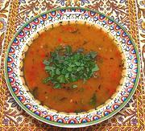

|
Red Lentil & Bulgur SoupTurkey - Ezo Gelin Çorbasi | ||||
| Serves: Effort: Sched: DoAhead: |
6 soup *** 1 hr Yes |
This delicious soup, very popular in Turkey, is easy to make, and can be easily made vegetarian. For other versions, see our recipes Red Lentil & Mint Soup and Red Lentil & Wheat Soup. | |||
|
|
1 2 1 1 1/2 1 1/2 3 4 1/4 1 ----- ar ----- ar ar |
c c T T T T T T c c T --- --- |
Red Lentils Water Butter Olive Oil Flour, allpurp Mint, dried Aleppo Pepper (1) Ajika (2) Stock Bulgur, coarse (3) Salt -- Garnish Mint, fresh -- Serve with Lemon Wedges Yogurt, plain |
The one hassle is the purée step, pulling out, setting up, using, cleaning and putting away with the food processor, but nothing says you can't make it "peasant style" without puréeing. Prep - (25 min - 7 min work)
|